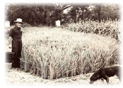
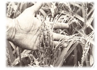

If the climate is right, even an amateur farmer can grow enough of this life-sustaining commodity to feed a family.
Reprinted with permission from Natural History August/September 1978. copyright© 1978 by the American Museum of natural History, Central, Park West at 79th street NewYork 10024 . One Year Subscription $10.00.
Rice is the main food for half the world's population. There are thousands of varieties of rice. All are crops of warm climates and only a few new types produce well where the mean temperature is 70°F (or higher) for less than four months of the year.
In the United States, rice culture began in South Carolina in 1694, but almost all, of our rice is now grown in limited regions of Arkansas, California, Louisiana, Mississippi, and Texas. The nutritive value of milled rice is about that of potatoes, but in the rough, or unhulled, form at everyday temperatures, rice can keep for several years ... much longer than raw potatoes.
Yields around the world vary widely, from any 1,000 pounds per acre on unfertilized plots dependent on fluctuating rainfall to more than 6,000 pounds per acre where plant variety is matched to optimum conditions of soil, water, and temperature in United States production in 1976 was nearly 13 billion pounds from 2.8 million acres, for an average yield of 4,600 pounds per acre. More than half of our production is exported ... major customers include South Korea, South Africa, the Arab countries of the Mideast, and some western European nations.
In the United States, commercial production is energy intensive and usually employs chemical aids. Rice seed is either sown by airplane in flooded fields or planted with grain drills in fields drained for planting and subsequently flooded. Weed-control herbicides such as 2,4-D are commonly applied by airplane.
Fields are drained again before harvest and allowed to dry sufficiently for combines to be used. Rice is hulled in centrally located mills ... the largest process as much as a billion pounds in a year. Milling nowadays is often preceded by special processing ... which first places rough rice under vacuum to remove air from the hull and kernel, then steams it under high pressure. This practice, akin to parboiling, drives some vitamins and minerals from the rice hull into the kernel, producing a more nutritious, longer-lasting final product. Milled rice is often further enriched with vitamins and minerals before being packaged for distribution to markets.
Civilizations tend to be only as strong and enduring as their agricultural bases ... it is accordingly an understatement to say that we should be concerned with what is going on in U.S. agriculture. Commercial rice culture in the United States illustrates many features of our total agricultural system. It involves extensive use of fossil fuels to power machinery, to fertilize, and to control insect and plant pests. Most of us are better fed than former populations. But our technological agriculture has also introduced harmful synthetics into the environment and replaced crop rotation with chemicals, resulting in the loss of humus and increased erosion of sloping lands.
Our systems for the preservation and widespread distribution of agricultural products have given us yearround access to many hero tofore seasonal foods but some of us miss the flavor of fresh, naturally ripened produce, which is seldom available nowadays.
Energy- intensive farming in the United States has been associated with social changes. There are fewer farmhands in the nation now and more unemployed workers in the cities. Since our agricultural methods rest significantly on the depletion of nonrenewable resourc es, they resemble some other features of our socioeconomic structure in that they probably cannot be sustained over the long term.
My maternal grandfather was a farmer and rancher in south Texas, so I was exposed to commercial agriculture as a youngster during the early 1940's: After 10 years of adult life in Norman, Oklahoma (population about 60,000)-and with our two sons out of high school-my wife L ottie and I agreed that we should try living on a farm.
Our 220-acre farm is mostly pasture. The original part of our house was built by a family of Choctaw Indian descent, which claimed 80 acres when the Indian lands in Oklahoma were allocated to individuals at the start of this century. I use a lot of old, but still functional, farm equipment that is not in great demand by full-time farmers. Most of it was pur chased for about 15 percent of the cost of new equipment. Our farm income, which is derived principally from honey sold to health food stores, amounts to less than $1,000 per year. My agricultural experiments-consequently-depend for their support on my income as a meteorologist.
We have some cows and calves, plus chickens and ducks, a productive apiary, a fine garden, a developing orchard, and a lovely creek. Some of the numerous wild animals share our produce, but they, in turn, are kept in check or at bay by our dogs and cats and by various ad hoc strategies. There is plenty of work, but we get some important help from a friendly neighbor. We take much pleasure in our animals and get much satisfaction from farm life. And we are learning.
For example, after tree seasons of experimentation, I have developed a system (A rice cultivation that produces a good yield with very little labor and no commercial fertilizers, pesticides, or herbicides. My paddy is a 734-square-foot oblong plot in which water normally stands after heavy rains, making it unsuitable for common garden crops. The topsoil is a dark loam, underlain by a slightly pervious clay. An irrigation system provides water from Finn Creek, made perennial by an upstream water-retention and flood-control project built in 1965 by the Soil Conservation Service.
In late winter or early spring I spread about 200 pounds of old cow manure on the paddy and plow it into the soil with the residue from the previous rice crop. For uniform distribution of water to the new crop, I level the paddy with a rake, boards, and a level indicator. Planting sprouts instead of ungerminated seed gives the rice a start over ungerminated weed seeds. So I place wet rough rice from the previous crop in a covered can on top of a hot-water heater. The seed sprouts very rapidly and is ready to plant in a few days. About two pounds of seed corresponds to the usual planting rate of a little more than one hundred pounds per acre. I use a rototiller just before planting ... this eliminates started weeds and provides an appropriate seedbed. The slightly sprouted rice is broadcast carefully by hand, raked gently to hide it from birds, and then watered to provide a shallow cover. Planting time in central Oklahoma is from May 1 to May 10.
I have heard that the planting of germinated seed is practiced in the Philippines, but the traditional Oriental method of rice growing involves cultivating the seedlings in separate beds and then transplanting them. With the transplanting method, two or sometimes three crops a year can be grown in the same rice paddy if the climate is suitably warm. Transplanting established plants gives the rice a strong advantage over weeds, which then grow only poorly in the shade of the larger rice plants.
The airplane method of seeding is very fast, of course, but probably not adapted to the use of tender sprouted seed. In most commercial practice, the rapid natural ascendancy of sprouted or transplanted rice over weeds, coupled with some manual labor for residual weed control, is traded for weed control by chemical methods. The planting of germinated seed is probably a good method for small-scale farming in the United States ... since in most of the country the warm season is not long enough for two rice crops, and weeds can be particularly troublesome when the germination of unsprouted rice seed is delayed by cool weather.
Rice is a beautiful plant and grows rapidly during Oklahoma's typically hot July and August. In 1977, my paddy required only one major weeding, which I did in about two hours with feet kept bare so the rice plants could be felt and not trampled. A major weed is barnyard grass, which resembles rice until the seed stalks appear, but which is a slightly darker green, has a diminutive or absent ligule-instead of the conspicuous pubescent ligule of rice-and Hems that are reddish at the base, while those of rice are nearly white. A broad-leaved aquatic weed with shallow roots is also common in my paddy, but it is easily pulled up and eaten by our ducks. During midsummer, the water surface shows tints of blue, indicative of nitrogenfixing, bluegreen algae. The paddy is not a significance cant source of mosquitoes, which are apparently controlled by the numerous frogs attracted during the summer growing season.
I harvest the rice when the kernels show the first signs of falling from their panicles, about September 20 in Oklahoma. My harvest date has been insensitive to the planting date., de pending instead on the variety of rice used. Birds are not a serious pest unless the rice stalks are blown down, or lodged, by a severe storm ... the stalk is not stiff enough to give even small birds a good perch.
I harvest the rice by hand in about an hour by successively gathering together all the stalks I can embrace and cutting them off with a knife. After the harvested stalks have dried for a few weeks in a large wooden tray in the barn, I remove more than 95 percent of the grain in about 15 minutes. This is done by striking the mass of stalks with the flat of an ordinary pitchfork. The grain falls to the bottom of the tray, and the stalks with unthreshed grain are worked over by eager chickens.
The unpalatable rice hulls cling closely and tenaciously to the kernels. Hulling consequently represents a major obstacle for the small rice grower. The Oriental pounding and rubbing methods involving a hollowed-out log seem ill-adapted to our ways, although not having guidance in such arts, I have probably not given them a fair trial. Another technique-small, electrically powered rice hullers used for testing grain sampled from commercial lots-seems expensive for the small farmer (huller prices started at about $600 in 1976). In my first hulling method I used a tray lined with carborundum paper and rubbed the rice with a similarly coated wooden block, but this procedure is painfully slow and produces some undesirable grit.
In 1976 I purchased, for $143 delivered, a Java hand-operated huller manufac tured in England (John Gordon & Sons, Ltd., 196a High Street, Epping, Essex, England). This small, sturdy machine, which should last for decades, yields 5 to 10 pounds of milled rice per hour in an easygoing operation by one person, including simple winnowing of the outturn mixture of kernels and separated hulls. The final product-brown rice, since only the outer husk is removed from most kernels-cooks in 20 minutes. The amount to be eaten in a month is all that should be milled at one time because brown rice is vulnerable to attack by insects and its oil can become rancid (of course, these risks are minor if the rice is refrigerated).
My paddy, although poorly leveled in 1977 owing to an error, provided 55 pounds of rough rice after threshing ... which corre sponds to a yield of about 3,200 pounds per acre. Approximately two-thirds of my total came from the half paddy that was better watered, so I anticipate a yield of 70 to 75 pounds with better leveling. But even 55 pounds is more than adequate for a family of four, since the annual per capita consumption in the United States is only 7-1/2 pounds of milled rice, derived from approximately 11 pounds of rough rice.
Some additional notes. My rice is Nova 66. 1 judge that given suitable land and sufficient water of good quality, the manual method of planting rice sprouts is practical for a small farm family cultivating up to an acre of paddy. This carries implications of a significant financial return on labor, since the current retail price of rice in health food stores is more than 504 per pound.
If an acre is planted, a small combine would be an appropriate aid, and the Java huller would need a simple conversion to belt drive to mill about 30 pounds of rice per hour. Deep water is not necessary on rice plants, although depths of six inches provide strong control of weeds. But a minimum water depth of an inch or two is required to keep the paddy continuously wet until the rice kernels are well filled out. I watered for 40 minutes every second or third day during the hot, dry summer of 1977 and estimate that less than $1.50 was spent on electricity for my one-horsepower pump throughout the season.
Overfertilizing will result in lush vegetative growth and lodging of the stalks. I now apply cow manure once before planting and leave the rest to the algae. The U.S. Department of Agriculture and other agencies provide instructions for achieving maximum yields by fertilizing during midseason. The benefits of commercial processing can be approached by parboiling rough rice and redrying before hulling. This practice is common in many of the less-developed countries where rice is grown in small plots for local use.
EDITOR'S NOTE: Edwin Kessler, a meteorologist, is the director of the National Severe Storms Laboratory ... located in Norman, Oklahoma.
|
 |
 |
|